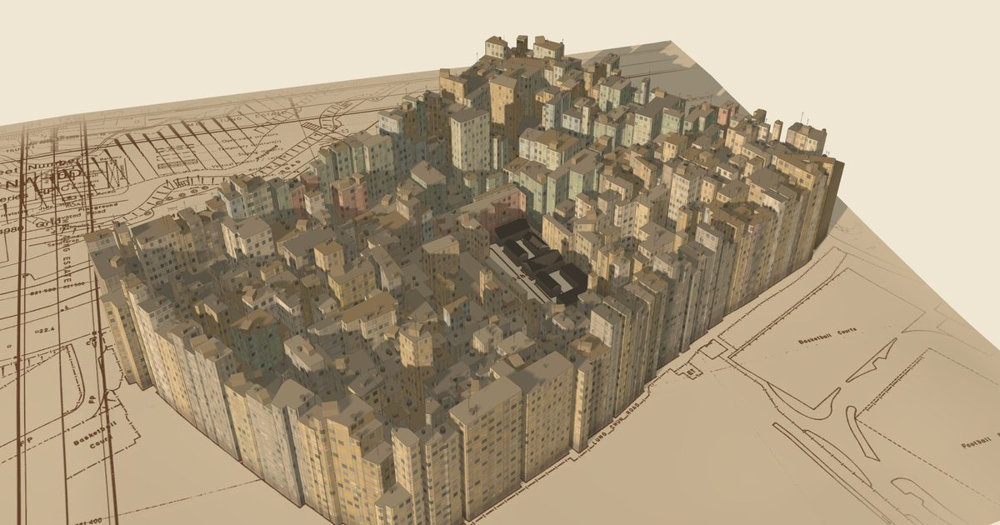

Arrow keys turn and tilt the view, Shift and arrow keys move it, plus and minus zoom. Enter shows what is known about the building under the cross in the middle of the view. The buttons below open stories, cross-sections, day and night, the economy and the history, which are all text.
Kowloon Walled City 九龍城寨
As surveyed in May 1987
Try Lung Chun Road, No. 12A, dentist, fish ball, 1898 or 光明街.
About this model
Every building outline, address number, street name and landmark is traced from the Hong Kong Lands Department's survey sheet 11-NE-11A of May 1987, the last edition before clearance that maps the city plot by plot. The Yamen, which still stands, comes from the 2024 sheet.
Inferred: building heights (a rule checked against photographs), ground levels (from survey spot heights) and all rooftop clutter (illustrative). Click a building to see what is known about it.
Cut through slices the city by floor or vertically to show every flat and business. Uses come from about 360 clearance compensation claims in the Government Records Service (address, floor and business); room layouts, furniture and the uses of unrecorded units are illustrative.
Stories pair seven places with open-licensed photographs from Wikimedia Commons (credited on each story). Walk here puts you at eye level in the lanes; the cables, pipes and lights there are illustrative.
Day & night (the clock) follows the sun on 14 January 1987, the day the city was surveyed. Which windows are lit, and the aircraft track, are illustrative. Crime & vice shows what sources say for each era, marked by how sure they are; no den or brothel locations are recorded, so none are drawn.
Economy charts the businesses named in the clearance claims, follows the food factories' goods out through the lanes (routes illustrative), and gathers what is known about rents, compensation, water and power.
Photos gathers 62 open-licensed photographs from the 1860s to today. Inside a home opens one family's flat in January 1987, every object explained; it is an illustration of a typical home, not a record of one.
History steps from the Song salt post to the park, with each year's survey on the ground. Before 1975 building heights are not recorded, so those years show the plots, not towers; the demolition order is illustrative.
Controls: drag to orbit, right-drag or two fingers to pan, scroll or pinch to zoom; click a building for its details. With the keyboard, Tab to the model, then arrows turn and tilt, Shift + arrows move, + and − zoom, Enter shows the building under the cross, and Escape closes the top panel.
Map data: survey sheets 1922–2024 © Lands Department, HKSAR Government, from DATA.GOV.HK; the 1987 city traced by this project. Chinese street names adapted from Streets in Kowloon Walled City by Lord Jaraxxus (CC BY-SA 4.0), shared under the same licence.
Photographs
Residents' voices → former residents, in their own words.
How we know → every fact with its certainty and sources, where sources disagree, and the city on screen and in print.
Who made this: Claude Opus 5.5, Anthropic's AI model, wrote all of it (the research, the tracing, the 3D model, the code and the text) under the instruction of nomagicpill. Spot a mistake, or remember the city differently? Get in touch. More →
Renders, data and text: this project. Copyrighted photographs used in research are linked, not reproduced. Code libraries: three.js, three-mesh-bvh and three-gpu-pathtracer (MIT); licence notices.
Day & night 14 January 1987
Economy how the city made a living
History from salt post to park
